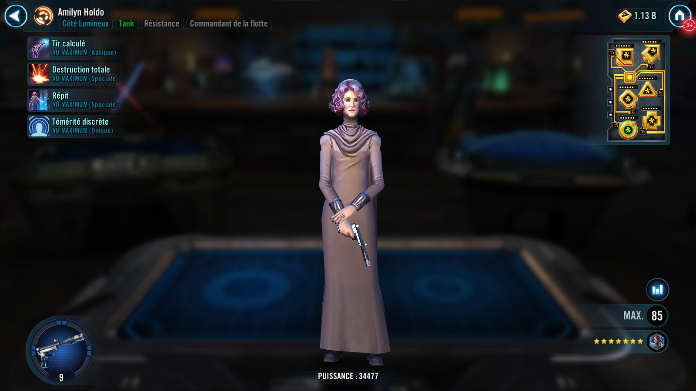

Amilyn Holdo
Seasoned Resistance Tank with powerful ally support and enemy debuffs
Seasoned Resistance Tank with powerful ally support and enemy debuffs

Deal Physical damage to target enemy and the least healthy other Resistance ally gains Foresight for 2 turns. When this Foresight expires, that ally Recovers 10% Health.
Deal Special damage to all enemies and inflict Daze for 2 turns. Inflict Defense Down and Evasion Down on the primary target for 2 turns.
Dispel all debuffs on target other ally, they Recover 40% Health and 20% Protection.

When another Resistance ally loses Foresight, Amilyn Holdo gains Taunt for 1 turn and Recovers 10% Health. While Amilyn Holdo doesn't have Taunt, she has +50 Speed and all other Resistance allies have +20% Critical Avoidance.